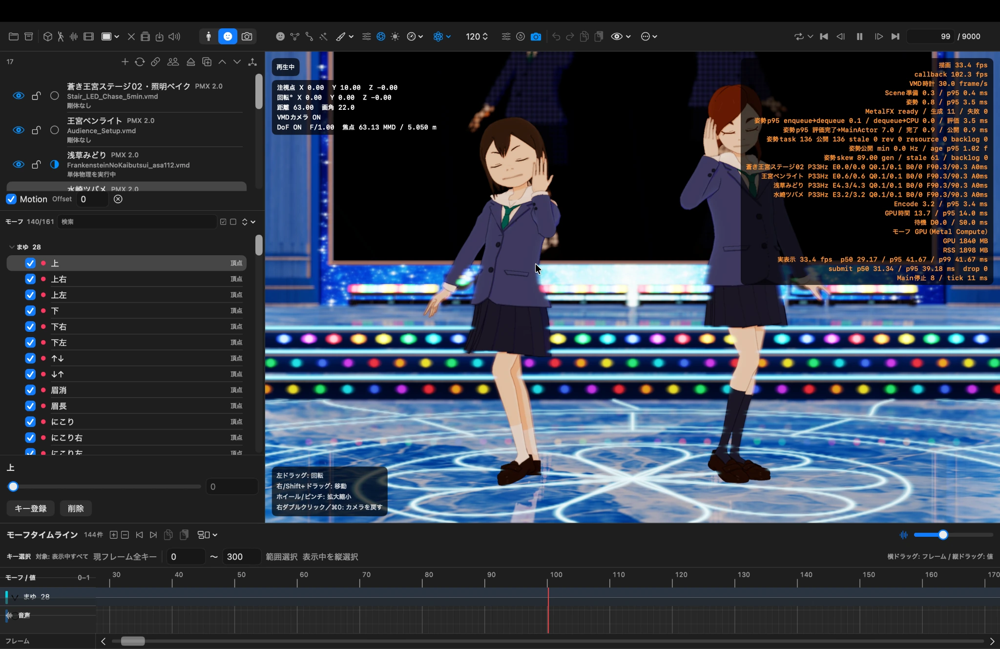

直したいのは ほんの一か所
ボーンの貫通に気づく
あのモーフも使っておけばよかった
直したいのはほんの一か所なのに 出先にはMacしかない
そんなときのために作り始めたのが VMD viewer for Macです
目的のコマまで移動して 別の角度から見て モーフを少し直して また再生する
この往復で画面が一瞬止まるたびに 修正したいところから意識がそれてしまいます
第1回では モーフ計算で触らなくてよい頂点を見つけました
その後に見えてきたのは GPUで描く時間だけを縮めても 消えない引っかかりがあるということです
1 平均FPSより気になった 画面が止まる一瞬
同じ平均FPSでも ほぼ等間隔に絵が届く再生と ときどき絵が途切れる再生は違って見えます
そこで開発中は 毎秒の枚数に加えて 次の絵が表示されるまでに何ミリ秒空いたかを測りました
60 fpsで等間隔なら 画面は約16.7 msごとに更新されます
その条件で32 ms以上空いた区間を数えると 平均値に埋もれていた引っかかりが見えてきます
一方で30 fpsの等間隔は約33.3 msです
32 msは同じ条件の試行を比べるための目印で どんな再生にも通用する合否ラインではありません
画面の更新が増えても ダンスが早送りになるわけではありません
作品内の時間が正しく進んでいるかは VMD時計で 別に確かめます
2 再生するたびに モーフ一覧まで作り直していた
モーフのウェイトは再生に合わせて変わります
でも モーフの名前や並び順まで 毎フレーム変わるわけではありません
診断用の短い区間では モーフ一覧の表示内容を組み立て直す処理が74回 行が選択されているかを調べる処理が30,340回ありました
v0.58.21では 変化するウェイトの編集欄と 普段は変化しない一覧を分けました
同じ診断区間で一覧の評価は0回になり 編集欄の更新は続きました
タイムラインも 再生ヘッドだけが動くなら 目盛りやモーフ名まで巻き込まないようにしました
M2 Maxで人物2体とステージを再生し 変更前後を比べた結果です
| 見たもの | 変更前 | 変更後 |
|---|---|---|
| 実表示FPS | 49.38 | 54.25 |
| 32 ms以上空いた表示間隔 | 152回 | 14回 |
| VMD時計 | 30.00 frame/s | 30.00 frame/s |
平均FPSの差よりも目を引くのは 次の絵まで長く空いた回数が152回から14回に減ったことです
これはGPUそのものを速くした結果ではなく 編集画面の更新を含む複数の変更をまとめて比べた結果です[注記2]
続くv0.58.22では 横スクロールの位置を必要とする部品だけに通知するようにしました
v0.58.23では 次に表示する候補が使われると決まってから必要な確認を行い 使われずに置き換わる候補の確認を省きました
同じ50秒再生を4対比べた後者の試験では 32 ms以上空いた回数の中央値が19.5回から4.5回に減りました
3 処理を減らしても 速くならないことがある
手を入れた案が すべて採用になったわけではありません
v0.58.26のモーフ編集の試作は 比較した5対のうち4対で短くなりました
ただし短縮の中央値は3.36 msで 同じ版を測り直したときの揺れは7.65 ms
この試験だけでは短縮を変更の効果と判断できませんでした
別の試作では モーフ配列の検査をまとめたところ 逆に長く空く表示間隔が5対すべてで増えました
こうした案は見送りました
減らした処理の数だけで判断せず 同じ作品を動かして 操作と画面表示を確かめるようにしています
4 再生がなめらかになることと マウスについてくること
v0.58.27では 特定の反射エフェクトを使う場面で 次の絵をGPUに渡すタイミングを見直しました
前の絵の表示を待つ間も 反射とモデルに必要な情報が同じフレームでそろっていれば 次の描画を先に提出できます
静止キーフレーム中心のシーンでは 実表示FPSの中央値が39.25から60.00に上がりました
一方で 人物2体が動く別条件の追加試験では57.87から57.94 fpsでした
60 fpsに届いた数値は 対象とした静止中心のシーンの結果です[注記3]
ビューポートを連続で回した試験では また別のことが分かりました
すべての表示を数えると38.89から47.20 fps
しかし 新しいマウス入力を反映した視点が表示された回数は 毎秒38.40から38.56回でした
絵が出る回数は増えましたが 操作した先の視点が届く回数はほぼ同じです
同じ視点をもう一度描いた絵も 全体のFPSには入ります
だから再生のなめらかさを測る試験とは別に マウスを動かした先の視点がどれだけ届くかも測っています
5 FPSオーバーレイは どの数字から見るか



再生中に気になったのが画面の引っかかりなら 実表示fps → 表示間隔 p95 → submit間隔の順が読みやすいです
- 実表示fps：画面に実際に届いた枚数の目安です ある画面では callbackが102.3 fpsでも 描画と実表示はどちらも33.4 fpsでした 描画処理が呼ばれた回数を 表示された枚数と混同しないのが最初のポイントです
- 表示間隔 p95／p99：遅い側の間隔を見ます 例ではp50が29.17 msで p95とp99は41.67 msでした p95が41.67 msなら 測った間隔の約95％がその値以下という読み方です 最長が41.67 msという意味ではありません
- submit間隔・Encode・GPU時間：提出の間隔がすでに空くなら 描画を渡す前も調べます 例ではEncode平均3.2 ms GPU平均13.7 msでしたが これらを足しても画面の表示間隔にはなりません 工程は並行して動き 待ちも別にあるためです
- VMD時計：作品の時間が正しく進んでいるかの目安です 実表示33.4 fpsとVMD時計30.0 frame/sが同時に出ても矛盾しません
- 姿勢公開 min・age p95：複数モデルのうち 更新頻度が最も低いモデルや 表示に使える姿勢が作品内の時刻からどれだけ遅れているかを見ます 絵が更新されていても モデルの姿勢まで新しいとは限りません
編集で「ドラッグしたのに絵がついてこない」と感じたら 再生のFPSより 入力→姿勢と姿勢→表示を見ます
入力が新しい姿勢に反映される前と その姿勢が画面へ届くまでを分けて考えられます
以上はオーバーレイの読み方の例で 本文の性能比較とは別の計測です[注記1]
各行の意味は巻末にまとめました
おわりに 直したい場所へ すぐ戻れるように
再生が速くても 停止して一コマ進めたときにモデルが別々の時刻を向いていたら 編集には使いにくいままです
高速化とあわせて 要求したフレームにモデルと投影動画がそろうことや 保存したVMDを読み直して編集結果が残っていることも確かめてきました
貫通が気になった場所を探して モーフを少し調整し 別の角度でもう一度見る
その小さな往復を途切れさせないことが VvfMで応答性を磨いてきた理由です
FPSオーバーレイ 全項目の読み方
表示は再生や操作の状態に応じて変わります
常に全項目が並ぶわけではありません[注記1]
注記
- オーバーレイの定義は開発版 v0.58.30（build 657）で確認したものです 再生画面の例は画像から版を特定できず 本文の性能比較と同一条件ではありません 本文 1へ戻る ↑ 本文 2へ戻る ↑
- v0.58.21の比較はM2 Maxで人物2体とステージ・1080p・HQ Toon・アンチエイリアスなし 50秒再生の中央47.8秒を測った各1走行です build 626／627の複数の変更をまとめた比較で 個別の寄与は分離していません 本文へ戻る ↑
- v0.58.27の60 fpsはM2 Max・内蔵120 Hz画面・Stage07の静止版ペンライト・単独のMMDayo SSR・1080p・HQ Toon・AA／物理OFF・60 fps上限での5走行の中央値です 動く人物の追加試験は各1走行で 他の作品や書き出しへは一般化できません 本文へ戻る ↑
画面例の使用素材
モデル くれよん（浅草みどり ／ 水崎ツバメ）
楽曲・ダンスモーション HIMEHINA『フランケンシュタインの怪物』
ステージ・観客 しおむすび
用語解説
- FPS
- 1秒あたりのフレーム数 描画提出と実表示では数え方が異なる
- GPU
- 画面の描画や大量の並列計算を担当する処理装置
- ミリ秒／ms
- 1秒の1,000分の1 32msは0.032秒
- 評価／再評価
- 表示に必要な情報や画面構成を組み立て直す処理 実描画とは別
- アンチエイリアス
- 輪郭のギザギザを目立ちにくくする処理
- SSR
- 画面内の情報を使う反射表現の方式 本文の性能値はVvfMの対象実装と条件に限る
- 中央値
- 数値を順に並べたとき中央に来る値 平均値とは異なる
- p95／p99
- 測定値の約95％／99％がその値以下になる境目
- MainActor
- 主に画面や操作に関する処理を扱う実行場所